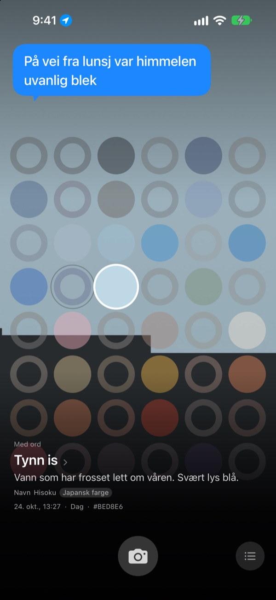
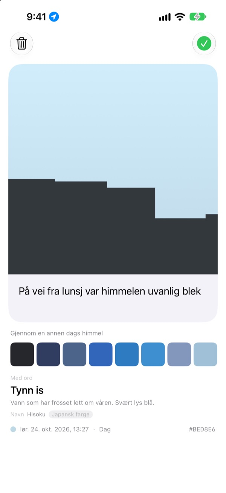
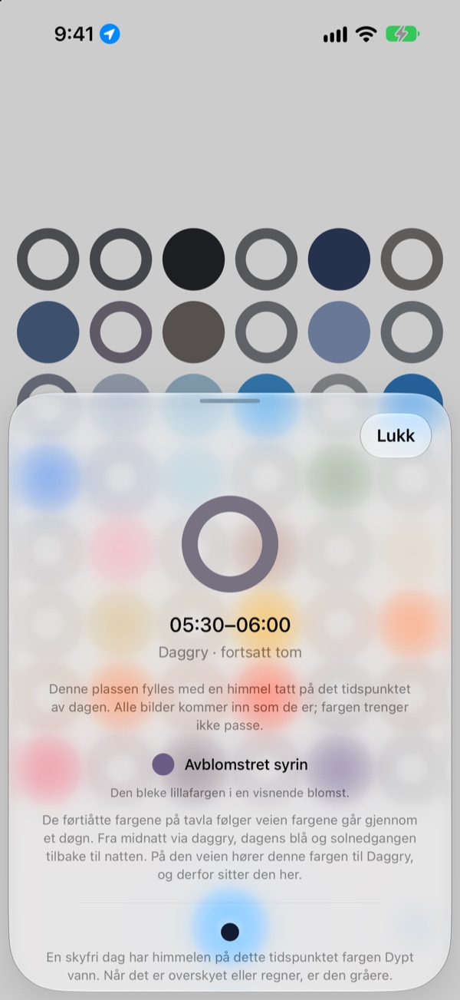
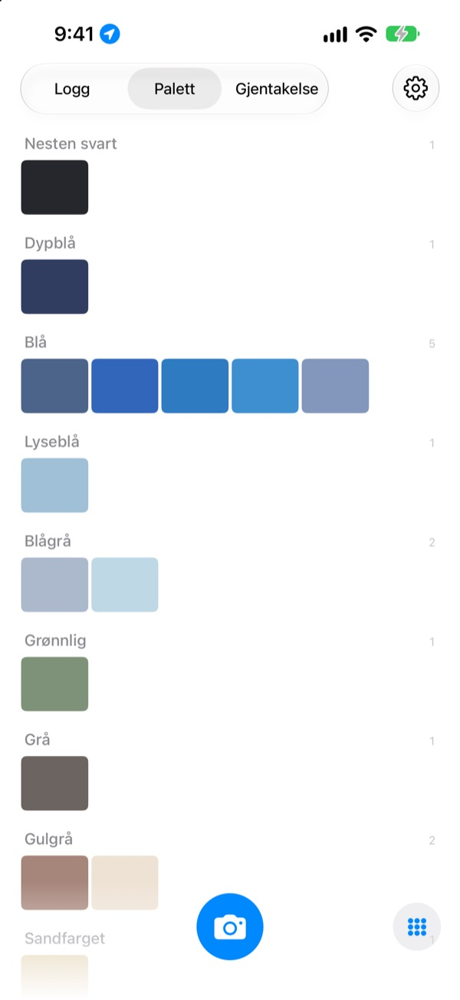

Hvilken farge hadde
himmelen i dag?
Ta et bilde av himmelen, så fylles ruten for det tidspunktet med fargen du fanget, på et brett med førtiåtte ruter. Fargen får også et navn du kan se for deg, som tynn is, bassengflis eller moden kaki.
Gratis. Ingen konto, ingen pålogging.

Prøv brettet
Trykk på en rute for å se hvilken del av dagen den hører til. Legg til et bilde av himmelen for å fylle ruten for akkurat nå, spol så dagene fremover og se brettet endre seg.
Du ser på himmelen hver dag, men husker ikke én eneste farge
Himmelen på vei til jobb, himmelen da du gikk ut etter lunsj: om kvelden er fargene borte. De himmelbildene du faktisk tok, drukner blant alt det andre i bildebiblioteket. SkyDex samler dem som farger og viser på ett brett hvilken vei dagens himmel gikk.
Hver himmel får et navn
Hver farge får først et navn du kan se for deg, som tynn is, bassengflis eller moden kaki. Under det kommer et navn med opphav: koreansk farge, japansk farge, pigment eller webfarge.
Når treffet er nært, står det Navn. Når det ikke er det, står det ærlig Nærmeste navn.

Legg igjen en linje
Et kort åpner seg med en gang du har tatt bildet. Skriv hva du tenkte mens du så opp, så dukker det fram over himmelen igjen hver gang du trykker på ruten på brettet.
Du kan også legge fargen fra en annen dags himmel over bildet og dele resultatet som et bilde.

Tomme ruter viser vei
Trykk på en tom rute for å se hvilken del av dagen den hører til, og hvilken farge du skal se etter. Den forteller også hvordan himmelen ser ut på det tidspunktet en skyfri dag, tilpasset soloppgang og solnedgang der du er.
Fargen trenger ikke å stemme. Det grå på en overskyet dag er også den dagens himmelfarge.

Logg, palett, gjentakelse
Bla gjennom himlene dine i rekkefølge, og samle fargene i paletter som blå, grå og sandfarget. Ta samme time en annen dag, så står de to side om side.
Widgets på Hjem-skjermen viser dagens brett og dagens himmel med ett blikk.

Tre steg, så er du i gang
- 1
Se opp
Trykk på kameraknappen under brettet, og la himmelen fylle kvadratet.
- 2
En rute fylles
Ruten for akkurat nå får fargen du fanget, og et navn.
- 3
Legg igjen en linje
Skriv på kortet som åpner seg, hva du tenkte.
Slik deler brettet dagen
- Midnatt · 00.00–05.00
- seks ruter
- Daggry · 05.00–08.00
- seks ruter
- Dag · 08.00–16.00
- tolv ruter
- Sen ettermiddag · 16.00–18.00
- seks ruter
- Solnedgang · 18.00–21.00
- tolv ruter, én hvert kvarter
- Natt · 21.00–24.00
- seks ruter
Rundt solnedgang, når himmelen skifter fort, sitter rutene tett, og midt på natten, når den nesten står stille, er de brede. Øverst er midnatt, og dagen renner nedover.
Spørsmål
Hvordan fylles en rute?
En himmel du tar i dag, fyller ruten for tidspunktet du tok den, også om fargen ikke ble som du ventet. Slik så himmelen faktisk ut da. Himler fra tidligere dager kommer inn etter farge: ligger en nær nok fargen til en rute, fyller den ruten, og hver himmel fyller bare én rute.
En rute som var full i går, er tom i dag.
Brettet er alltid i dag. En rute som gårsdagens himmel fylte etter tidspunkt, matches på nytt bare etter farge når døgnet skifter. Derfor er brettet noen dager nesten fullt og andre dager ganske tomt. Bildene dine er ikke borte: alle himlene ligger i Logg, og i fargerekkefølge i Palett.
De fylte rutene mine blekner.
Det er med vilje. Et bilde beholder sin ekte farge i en uke og blekner så sakte over de neste åtte ukene. Det slettes ikke, og det blekner aldri helt bort. Ta himmelen på det tidspunktet igjen, så får ruten straks full farge tilbake. Ingen rekke å bryte, ingen poeng å vinne tilbake.
Må fargen stemme?
Nei. Her finnes verken godkjent eller underkjent. Alle bilder lagres, og det grå på en overskyet dag er også den dagens himmelfarge.
Hvorfor spør appen om posisjonen min?
Bare for å kunne fortelle deg, når du trykker på en tom rute, hvordan en skyfri himmel ser ut på det tidspunktet, tilpasset soloppgang og solnedgang der du er. Den bruker en omtrentlig posisjon på kilometernivå, og koordinater festes aldri til bildene dine. Sier du nei, virker alt likevel, og Seoul brukes som utgangspunkt.
Kan jeg legge til en himmel fra bildebiblioteket?
Ja. En himmel du velger i Bilder i stedet for med kameraet, beskjæres også til et kvadrat og fyller ruten for akkurat nå, på samme måte som en du tar.
Hvordan sletter jeg et bilde?
Åpne bildet og trykk på Slett, eller sveip mot venstre på det i Logg. Det fjernes fra både enheten og iCloud. Sletter du appen, blir kopien i iCloud liggende, så himlene dine kommer tilbake hvis du installerer den på nytt.
Hva skjer når jeg bytter telefon?
Himlene dine lagres i din egen iCloud, så de følger med til en ny enhet som er logget på med den samme Apple-kontoen. Ingen konto og ingen server, og bildene og fargene dine sendes aldri til utvikleren. Ingen reklame, ingen sporing.
Er den virkelig gratis?
Ja, alle funksjoner er gratis. Liker du appen, kan du gi utvikleren tips i appen, men tips låser ikke opp noe.
Hvilke enheter fungerer den på?
iPhone med iOS 17.0 eller nyere, bare stående.
Feil, rar oppførsel eller noe du vil si: skriv til leeo@kakao.com. Fortell gjerne hva du holdt på med og hvilken iOS-versjon du har, så blir det mye lettere å finne årsaken.